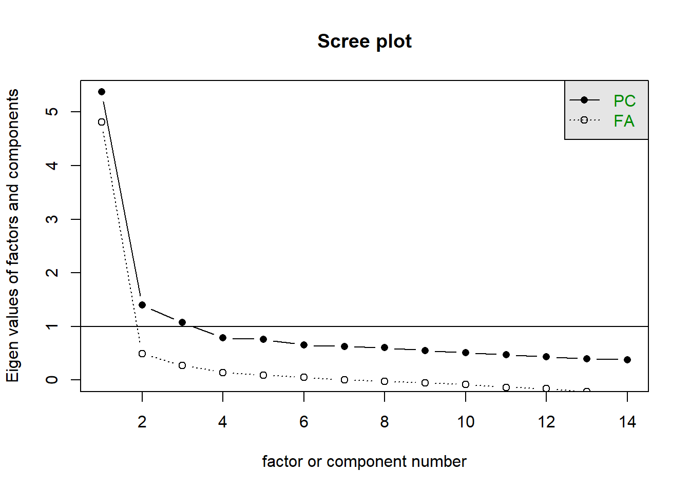

These data come from a 2022 Study that aimed to develop a new measure of environmental attitudes. Specifically, the data we are working with are from “Study 2” (It starts on page 6 of the article, but it’s very similar to Study 1, so the whole thing is relevant).
It contains lots and lots of variables. It seems like they have already reverse coded any of the necessary individual items (and renamed them with _r after them). They’ve also calculated and included the mean scores for each measure.
Number of private pro-environmental behaviours (Gallup Poll)
private
Number of public pro-environmental behaviours (Gallup Poll)
public
Number of all pro-environmental behaviours (Gallup Poll)
PEB
Question 1
The paper is reporting a new measure of environmental orientation. Which one is the new one?
What benefits do they think it has over the existing measures?
Take a look at the wordings of the items for their new measure, and for the existing measures (these are near the end of the paper). Do you agree?
Solution 1. Their new measure is the “Moral Environmentalism Scale” (MES). They suggest it may be an improvement over other measures because they tend to have a politically left-leaning ideology to the statements, whereas the MES is based on “moral foundations theory” (I’m not sure what that is, but they do go on to explain it somewhere I think).
Some of the item wordings of the MES are clearly specific to the US, which makes it less generalisable to other contexts. I’ll be honest - I can’t fully see the political ideology in the wordings of the CNS and NEP scales! But then a) I’m not from the US, and b) there’s the possibility depending on our own ideological leanings, it may be easier/harder to see the biases in the questions?
Question 2
What did the authors report for the reliability of the three main measures?
Can you get these out from the data? note: I could get the same numbers for only 2 of the 3!
Solution 2. The authors reported Cronbach’s alpha,
“MES had high internal reliability with a Cronbach’s alpha of .92. Cronbach’s alpha for the NEP was .82 and .78 for the CNS.”
Let’s try!
library(tidyverse)library(psych)mes <-read_csv("data/ssi_clean.csv")alpha( mes |>select(mes1_r:mes27_r) )$total
raw_alpha std.alpha G6(smc) average_r S/N ase mean sd median_r
0.916 0.923 0.939 0.307 11.9 0.00381 3.96 0.561 0.301
alpha( mes |>select(nep1:nep15) )$total
raw_alpha std.alpha G6(smc) average_r S/N ase mean sd median_r
0.817 0.814 0.836 0.226 4.37 0.0083 2.57 0.622 0.229
alpha( mes |>select(cns1:cns14_r) )$total
Some items ( cns12_r cns14_r ) were negatively correlated with the first principal component and
probably should be reversed.
To do this, run the function again with the 'check.keys=TRUE' option
raw_alpha std.alpha G6(smc) average_r S/N ase mean sd median_r
0.811 0.823 0.848 0.249 4.65 0.00838 2.46 0.533 0.343
Hmm.. things are matching up with the MES and the NEP, but not the CNS. We also seem to get a message suggesting that some of the items are possibly reverse coded.
But even if we let alpha() take care of that we still don’t get the 0.78..
ah well.
alpha( mes |>select(cns1:cns14_r), check.keys =TRUE)$total
raw_alpha std.alpha G6(smc) average_r S/N ase mean sd median_r
0.847 0.855 0.868 0.297 5.9 0.00692 2.4 0.573 0.343
Question 3
How did the authors assess convergent validity of the MES?
Can you do the same?
Solution 3.
“Convergent validity was assessed through the zero-order correlations between the MES, CNS, and NEP.”
…
“The MES correlated strongly with the NEP, r(497) = 0.70, p< .001, and with the CNS, r(497) = 0.55, p < .001. CNS and NEP correlated moderately, r(998) = 0.46, p < .001. This overlap suggests that all three scales tapped into shared aspects of pro-environmental orientation.”
I think “zero order” here means “without considering any other variables”. So… just cor()?
I am going to assume these are between the mean scores for the scales. And we’ll use the pairwise complete observations - i.e., all observations that have both CNS and NEP will be used to calculate the correlation between those two, and all that have both MES and CNS for those, and so on..
mes |>select(MES,CNS,NEP) |>cor(use ="pairwise.complete.obs")
MES CNS NEP
MES 1.000 0.549 0.701
CNS 0.549 1.000 0.447
NEP 0.701 0.447 1.000
We’re close, but the correlation between CNS and NEP isn’t quite the same (0.45 but it’s reported as 0.46).
Let’s check the numbers of observations:
mes |>select(MES,CNS) |>na.omit() |>nrow()
[1] 499
mes |>select(NEP,CNS) |>na.omit() |>nrow()
[1] 1000
Hmm… this all looks fine. The degrees of freedom reported for each of the correlations is \(n-2\).
Question 4
How did they assess predictive validity?
Can you do the same?
Solution 4.
“Predictive validity was assessed by examining how predictive they were of pro-environmental behavior in regression.”
…
“MES moderately correlated with pro-environmental behavior frequency, r(497) = 0.40, p < .001. The NEP had a weaker correlation with behavior r(998) = 0.26, p < .001. The CNS had the strongest correlation with behavior at r(998) = 0.46, p < .001.”
But then they initially produce some correlations…
These all seem to match:
mes |>select(MES,CNS,NEP,PEB) |>cor(use ="pairwise") |>round(2)
mod1 <-lm(PEB ~ MES + NEP + CNS + hhincome + Rep + age + female + Ideology + educ, data = mes)sjPlot::tab_model(mod1)
PEB
Predictors
Estimates
CI
p
(Intercept)
-2.54
-4.76 – -0.33
0.025
MES
1.22
0.61 – 1.83
<0.001
NEP
-0.67
-1.19 – -0.16
0.010
CNS
1.86
1.37 – 2.34
<0.001
hhincome
0.03
-0.07 – 0.13
0.518
Rep
-0.29
-0.84 – 0.26
0.296
age
-0.01
-0.02 – 0.00
0.141
female
0.07
-0.40 – 0.53
0.773
Ideology
-0.28
-0.45 – -0.11
0.001
educ
0.13
-0.05 – 0.31
0.154
Observations
499
R2 / R2 adjusted
0.287 / 0.273
optional - issues with their conclusions
Note that the authors also calculate something called “partial omega squared” for their regressions. We haven’t actually seen these in DAPR, and they’re nothing to do with McDonald’s Omega - nothing to do with reliability.
These are essentially measures of “effect size” that are used to reflect “how much outcome variance is explained by a predictor”.
The authors note:
“The CNS had a larger effect on behavior than the MES (b=2.00 and b=1.41) … … The MES explained 18% of the variance in behavior while the CNS explained 9%. The NEP had no unique effect.”
The main takeaway of Study 2 is the convergent and predictive validity of the MES. While the CNS more strongly predicted behavior demonstrated by its scaled coefficient, the partial omega squared value of MES indicated that it explained more of the variance in behavior than the CNS or NEP.
This is actually a mistake on their part. In their calculation of omega-squared, they have used “Type 1 sums of squares”. In essence, this means order matters.
So their results show that:
not accounting for anything else, MES explains 18% of the variance in pro-environmental behaviours
on top of the variance explained by MES, NEP explains 0%,
on top of the variance explained by both MES and NEP, CNS explains 9%.
The issue is that they have interpreted them all as if they were showing “unique” variance explained (i.e., they’ve interpreted them all like number 3 above), and are saying that MES explains more. But it only explains more here because they put it in at the start.
Order them differently and we’ll get a different picture:
mod1a <-lm(PEB ~ CNS + NEP + MES + hhincome + Rep + age + female + Ideology + educ, data = mes)omega_squared(mod1a, partial =TRUE)
Do each of the 3 main scales look unidimensional to you?
Solution 5. For this, let’s just go back to scree plots!
mes |>select(mes1_r:mes27_r) |>scree()
mes |>select(nep1:nep15) |>scree()
mes |>select(cns1:cns14_r) |>scree()

Where now?
Question 6
If you’re at this point, then here’s some options for where to direct your energy:
Find a paper from one of your other courses that uses a questionnaire to measure something. Anything. Find the paper that initially presented the measure and see how they approach assessing the validity and reliability of their measure.
Go back over the labs from the course and ask us any outstanding questions!
Write your own flashcards! Flashcards are great, but it’s really act of writing them that gets us thinking and helps us to consolidate understanding.